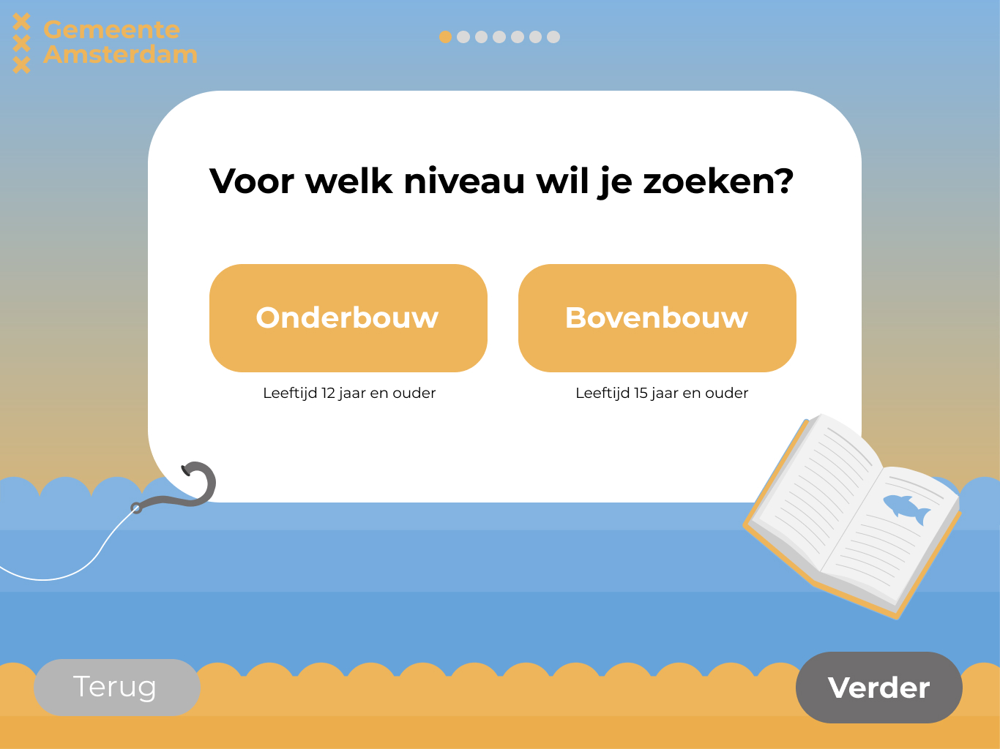
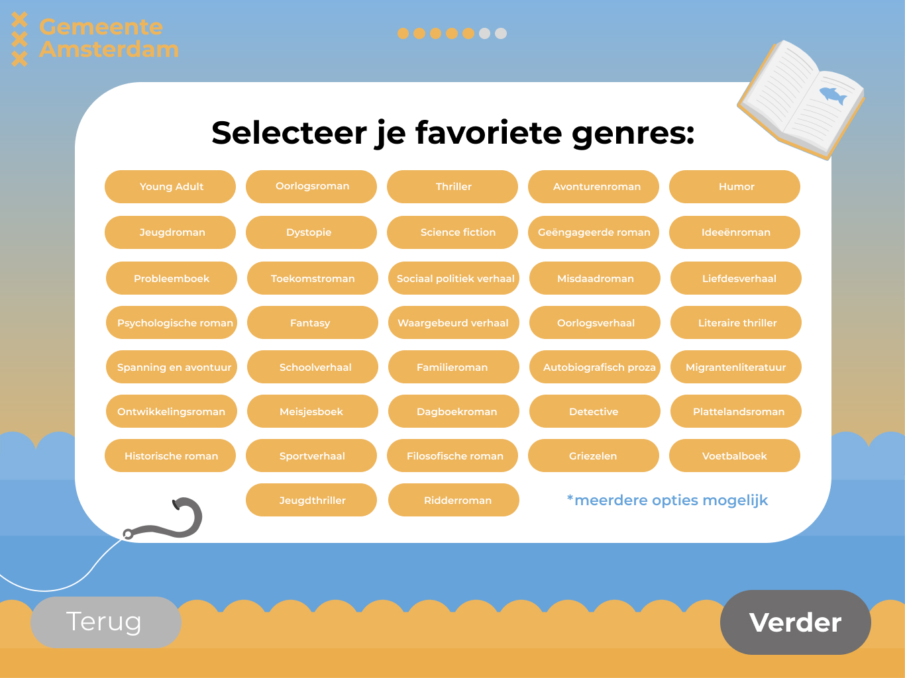

Boekenzoeker voor de Gemeente Amsterdam, de Hi-Fi schermen
Een overzichtelijke en speelse applicatie die middelbare scholieren helpt om eenvoudig boeken te vinden die bij hun interesses passen.
Door stap voor stap voorkeuren aan te geven, zoals favoriete genres, leesniveau of of je leest voor je lijst, ontstaat een persoonlijke selectie van passende boeken.
De interface is ontworpen met helderheid en toegankelijkheid als uitgangspunt, afgestemd op jongeren tussen de 12 en 15 jaar.
Elke stap in het proces is intuïtief opgebouwd, met grote knoppen, duidelijke titels en visuele ondersteuning.
De gekozen boeken verschijnen overzichtelijk in een ‘boekenlijst’, die eenvoudig naar jezelf gestuurd kan worden via e-mail.
Zo kunnen leerlingen gericht op zoek in de schoolbibliotheek, zonder dat er een account nodig is.
Naast deze drie voorbeeldschermen zijn er nog veel meer ontwerpen gemaakt, verdeeld over verschillende iteraties.
Al deze schermen en de stappen in het proces zijn gebundeld in een PDF-bestand dat het volledige ontwerptraject laat zien; van schets tot interactieve oplossing.

